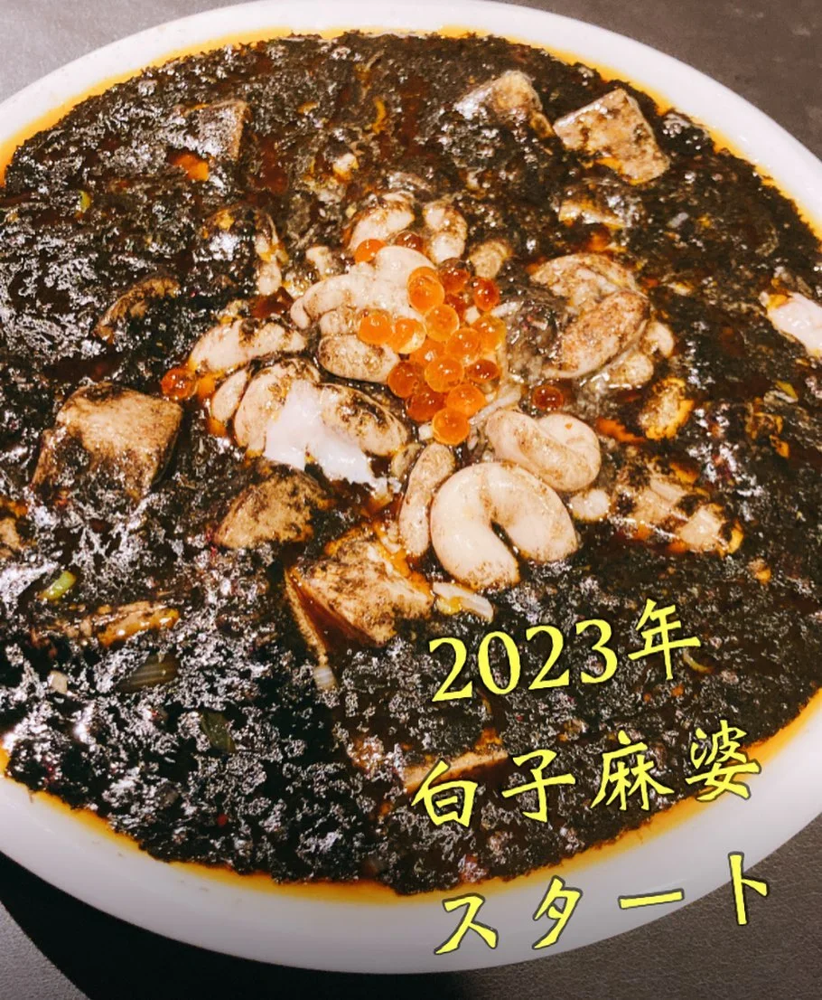

2023年11月8日
今年も白黒ハッキリつけましょう！！

今年も白黒ハッキリつけましょう！！ 本日からスタートです！！ 『海鮮Black麻婆 白子のせ！！』 エビのぷりぷり感、 イカの歯ごたえ、 イカスミのコク、 イクラみたいなラー油の玉！！ そして、白子のクリーミーさ！！ ぜひぜひ お待ちしてまーす🦑🦐 #中華バル#中華#中華料理#福島区グルメ#路地裏#B級グルメ#中国#チャイニーズ#路地裏チャイニーズ有馬#有馬#シュウマイ#餃子#点心#フォローミー#followme#パクチー#麻婆豆腐 #海鮮BLACK麻婆